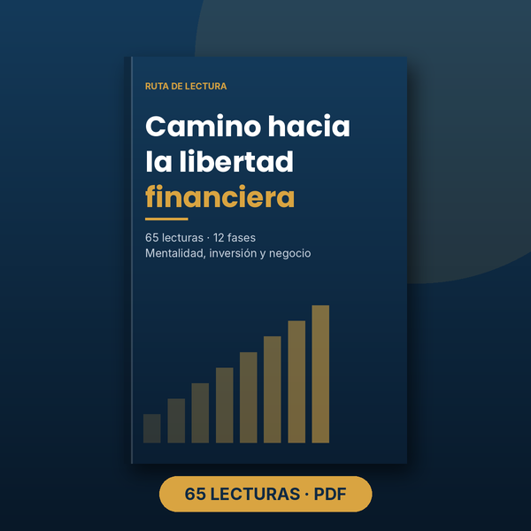
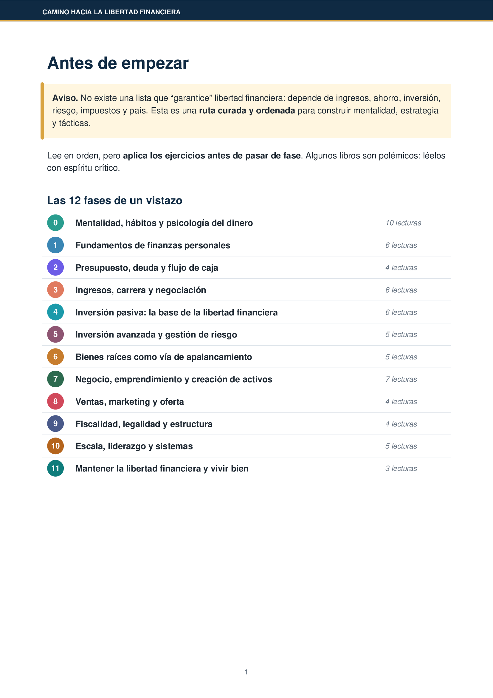
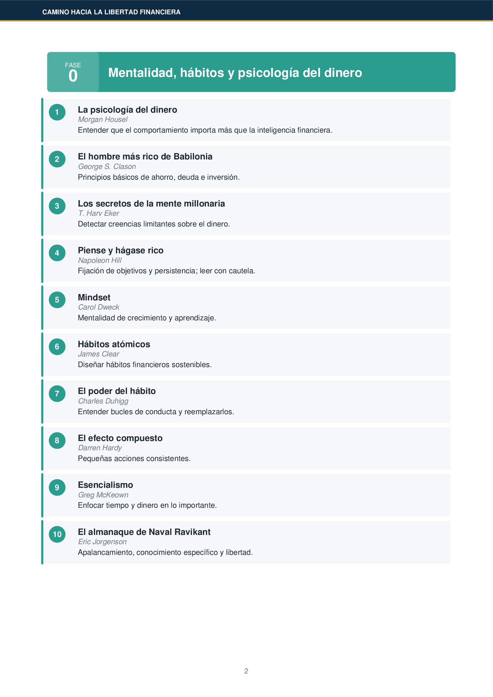
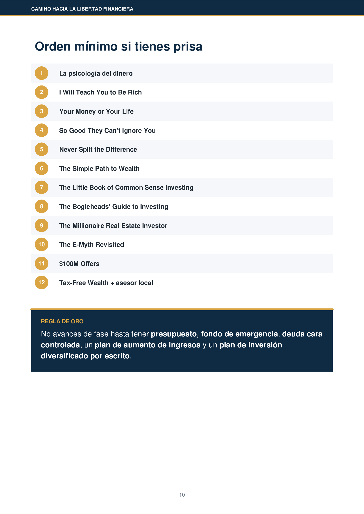

65 lecturas ordenadas para construir tu libertad financiera
12 fases, de la mentalidad a la inversión, el negocio y los impuestos.
Descargar por 4,84 €PDF · 11 páginas · descarga inmediata · pago seguro

Por qué leer sin orden no funciona
Hay más de 65 libros excelentes sobre dinero. El problema no es la oferta: es el orden.
Si empiezas por inversión avanzada sin tener presupuesto, acabas con una cartera y cero colchón. Si empiezas por fiscalidad sin ingresos, optimizas impuestos sobre nada. Si te quedas en la mentalidad y nunca pasas a la parte aburrida, te quedas con buenas intenciones y ningún número.
Esta guía es una ruta: 12 fases encadenadas en las que cada una da por hecho que has aplicado la anterior. No tienes que decidir qué leer después. Solo aplicar lo que acabas de leer y pasar a lo siguiente.
Qué incluye
-
65 entradas de lectura
63 títulos distintos, una relectura final y una acción obligatoria, numeradas del 1 al 65 para que sepas siempre por dónde vas.
-
12 fases encadenadas
De la mentalidad a la inversión, el negocio, los impuestos y la escala. Cada fase prepara la siguiente.
-
Una línea por lectura
No es un resumen: es la razón por la que ese libro está en ese punto de la ruta y qué te llevas de él.
-
Orden mínimo si tienes prisa
12 títulos imprescindibles si no vas a leer los 65. Empieza por ahí y no te disperses.
Ver los 12 títulos
- La psicología del dinero
- I Will Teach You to Be Rich
- Your Money or Your Life
- So Good They Can’t Ignore You
- Never Split the Difference
- The Simple Path to Wealth
- The Little Book of Common Sense Investing
- The Bogleheads’ Guide to Investing
- The Millionaire Real Estate Investor
- The E-Myth Revisited
- $100M Offers
- Tax-Free Wealth + asesor local
-
La regla de oro
No avanzas de fase hasta tener presupuesto, fondo de emergencia, deuda cara controlada, plan de aumento de ingresos y plan de inversión diversificado por escrito.
-
Aviso para adaptar a tu país
Fiscalidad, estructuras societarias y pensiones cambian según el país. La fase 9 te obliga a consultar a un profesional local antes de decidir nada.
Qué hay dentro: las 12 fases
Cada fase agrupa lecturas con una función concreta dentro de la ruta.
Fase 0 Mentalidad, hábitos y psicología del dinero 10 libros
El comportamiento importa más que la inteligencia financiera. Aquí se instalan los hábitos, se detectan las creencias limitantes y se aprende a enfocar tiempo y dinero.
Fase 1 Fundamentos de finanzas personales 6 libros
El sistema básico: presupuesto automático, relación tiempo-dinero, ahorro constante y reglas simples que sobreviven al paso del tiempo.
Fase 2 Presupuesto, deuda y flujo de caja 4 libros
Controlar el flujo antes de invertir. Presupuesto base cero, bola de nieve de deudas y fondo de emergencia.
Fase 3 Ingresos, carrera y negociación 6 libros
La palanca más rápida al principio no es la rentabilidad: es tu sueldo. Habilidades escasas, concentración y negociación.
Fase 4 Inversión pasiva: la base 6 libros
Indexación, bajo coste, diversificación y disciplina. La parte que sostiene todo lo demás.
Fase 5 Inversión avanzada y gestión de riesgo 5 libros
Margen de seguridad, análisis cualitativo y, sobre todo, sesgos: cómo no arruinarte tú solo.
Fase 6 Bienes raíces como apalancamiento 5 libros
Modelo mental, análisis de rentabilidad, gestión de alquileres y compra conservadora.
Fase 7 Negocio, emprendimiento y activos 7 libros
Sistematizar, validar con bajo riesgo, crear valor único y construir algo vendible.
Fase 8 Ventas, marketing y oferta 4 libros
Sin oferta no hay ingresos. Cómo se construye y se vende algo que la gente quiera comprar.
Fase 9 Fiscalidad, legalidad y estructura 3 libros + 1 acción
Impuestos como estrategia, estructuras societarias y ventajas locales. Incluye una acción obligatoria: consultar a un asesor fiscal y legal de tu país.
Fase 10 Escala, liderazgo y sistemas 5 libros
Cuando ya funciona, el cuello de botella eres tú. Sistemas operativos, contratación y ejecución por ciclos.
Fase 11 Mantener la libertad y vivir bien 3 libros
Gastar con criterio, dinero con propósito y evitar el autosabotaje cuando ya hay patrimonio.



Para quién es y para quién no
Es para ti si…
- Quieres una hoja de ruta, no otro listado de 100 libros sin orden.
- Estás empezando y no sabes qué leer primero.
- Ya lees sobre dinero, pero todo te suena a fragmentos sueltos.
- Vas a aplicar lo que lees, no solo a subrayarlo.
No es para ti si…
- Buscas resúmenes: esto no resume los libros.
- Buscas rentabilidad garantizada: no existe.
- No vas a dedicarle tiempo: son 65 lecturas.
- Esperas los libros incluidos: no lo están.
Un pago único de 4,84 €
4,84 € IVA incluido
Recibes el PDF de 11 páginas en la página de confirmación de Gumroad y por email, al instante.
- 65 lecturas ordenadas en 12 fases
- Descripción de cada lectura y por qué está ahí
- Orden mínimo de 12 títulos si tienes prisa
- La regla de oro para no avanzar en falso
- Descarga inmediata en PDF
Contenido digital: al completar la compra aceptas el acceso inmediato y la pérdida del derecho de desistimiento (art. 103.m TRLGDCU).
Preguntas frecuentes
¿En qué formato está?
PDF de 11 páginas, tamaño A4. Se lee igual de bien en móvil, tablet y ordenador.
¿Cómo lo recibo?
Al terminar el pago, Gumroad te muestra la página de confirmación con el enlace de descarga y además te envía un email con el mismo enlace. Si no llega, revisa la carpeta de spam y escribe a jameszabala001@gmail.com.
¿Los libros están incluidos?
No. Esto es una guía de lectura: títulos, orden y el motivo de cada uno. Los libros se compran o se toman en préstamo aparte. No se reproduce su contenido ni se usan sus portadas.
¿Puedo pedir una devolución?
Es contenido digital con descarga inmediata, así que el derecho de desistimiento se pierde al iniciar la descarga. Si tienes un problema técnico con el archivo, escríbeme y lo resolvemos.
¿El precio lleva IVA?
Sí. 4,84 € con IVA incluido. Gumroad actúa como vendedor y gestiona el IVA de la Unión Europea en el momento del pago.
¿Sirve si no vivo en España?
Sí, pero ten en cuenta que la fase 9 (fiscalidad y estructura) parte de referencias de España y Estados Unidos. Adáptala a la normativa de tu país con un profesional local.
Aviso honesto
No existe una lista que garantice la libertad financiera. Depende de tus ingresos, tu ahorro, tu tolerancia al riesgo, tus impuestos y tu país. Esto es una ruta curada y ordenada para construir mentalidad, estrategia y tácticas: no garantiza resultados financieros. Lee en orden y aplica los ejercicios antes de pasar de fase. Algunos títulos son polémicos; léelos con espíritu crítico.
Empieza por el principio
El primer libro de la ruta tarda una tarde. El resto ya viene ordenado.
Descargar por 4,84 €PDF · 11 páginas · descarga inmediata · pago seguro